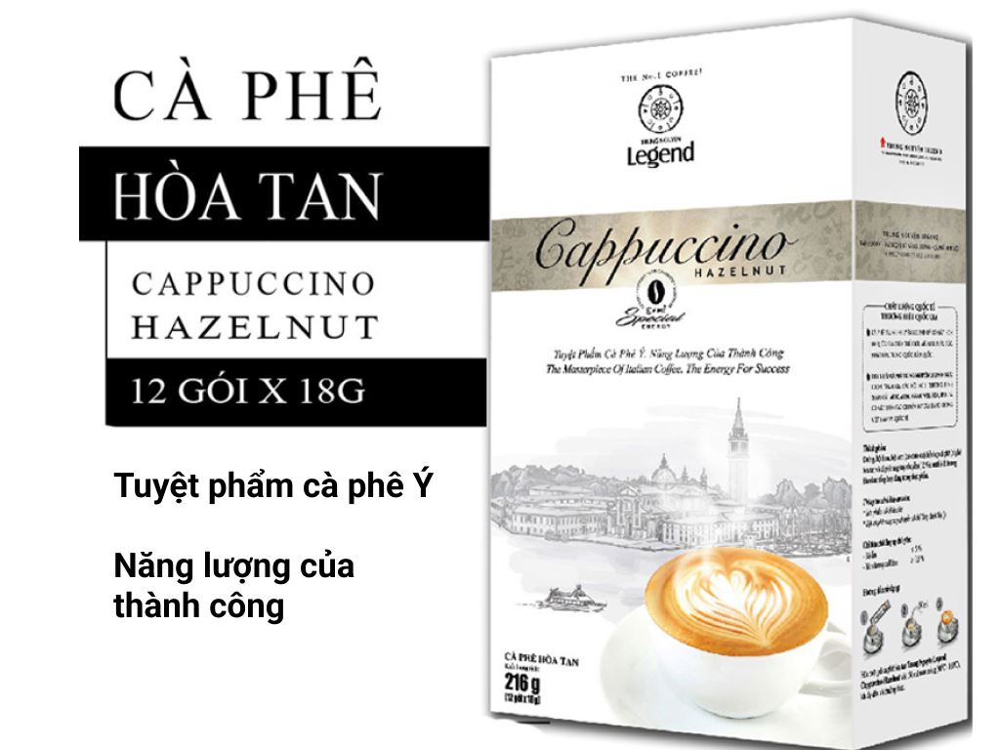

Cà phê - thức uống huyền thoại, khởi đầu cho ngày mới đầy hứng khởi
Trên hành trình chinh phục thế giới hương vị, cà phê không chỉ đơn thuần là thức uống, mà còn là biểu tượng của văn hóa, là nơi kết nối những tâm hồn đồng điệu. Giữa nhịp sống hối hả, cà phê hòa tan mang đến sự tiện lợi nhưng vẫn giữ trọn hương vị đậm đà, giúp bạn tận hưởng trọn vẹn khoảnh khắc thư giãn bất cứ lúc nào, bất cứ nơi đâu.
 Các loại cà phê hoà tan
Các loại cà phê hoà tan
Hành trình từ hạt cà phê đến ly cà phê hòa tan:
Từ những hạt cà phê chín mọng được thu hoạch cẩn thận, trải qua quá trình rang xay tỉ mỉ, cà phê hòa tan ra đời như một minh chứng cho sự sáng tạo không ngừng của con người. Bằng công nghệ hiện đại, hương vị cà phê được lưu giữ nguyên vẹn trong từng hạt bột mịn, sẵn sàng hòa quyện cùng nước nóng để tạo nên ly cà phê thơm ngon, đánh thức mọi giác quan.
Cà phê hòa tan - Nét chấm phá tiện lợi trong cuộc sống hiện đại:
Sự bận rộn của cuộc sống khiến nhiều người không có đủ thời gian để thưởng thức cà phê phin truyền thống. Cà phê hòa tan ra đời như một giải pháp hoàn hảo, giúp bạn tiết kiệm thời gian pha chế mà vẫn có được ly cà phê thơm ngon, đậm đà. cà phê: Được vun trồng cẩn thận trên những mảnh đất bazan màu mỡ, dưới ánh nắng chan hòa, tạo nên những hạt cà phê chất lượng.
Cà phê hòa tan - Đa dạng hương vị, đáp ứng mọi sở thích:
Từ cà phê đen nguyên bản đến cà phê sữa ngọt ngào, từ cà phê đá sảng khoái đến cà phê hương vị độc đáo, cà phê hòa tan mang đến vô số lựa chọn để đáp ứng mọi sở thích và khẩu vị.
Cà phê hòa tan - Hơn cả một thức uống:
Cà phê hòa tan không chỉ là thức uống giải khát, mà còn là người bạn đồng hành trong những buổi sáng thức khuya dậy sớm, là nguồn cảm hứng cho những ý tưởng sáng tạo, là cầu nối gắn kết những tâm hồn đồng điệu.
 Tận hưởng hương vị cà phê hoà tan
Tận hưởng hương vị cà phê hoà tan
Hãy cùng khám phá thế giới cà phê hòa tan đầy màu sắc, nơi hương vị và sự tiện lợi hòa quyện hoàn hảo, để mỗi khoảnh khắc của bạn thêm trọn vẹn!
Các loại sản phẩm cà phê hoà tan
Cà phê hòa tan G7 - Khơi nguồn cảm hứng mỗi ngày
G7 là thương hiệu cà phê hòa tan hàng đầu Việt Nam, được yêu thích bởi hương vị cà phê đậm đà, mạnh mẽ, cùng sự tiện lợi và giá thành hợp lý. Với đa dạng các dòng sản phẩm, G7 đáp ứng mọi nhu cầu và sở thích của người thưởng thức.
1. Cà phê hòa tan G7 đen đá:
Vị cà phê đen nguyên chất, đậm đà, mạnh mẽ.
Phù hợp cho những người thích cà phê đậm vị.
Giúp bạn tỉnh táo và tập trung trong công việc.
 Cà phê hoà tan G7
Cà phê hoà tan G7
2. Cà phê hòa tan G7 3in1:
Cà phê hòa tan pha sẵn với đường và sữa.
Tiện lợi cho những người bận rộn.
Vị ngọt ngào, béo ngậy.
3. Cà phê hòa tan G7 Cappuccino:
Vị cà phê hòa quyện với vị sữa béo ngậy và lớp bọt kem mịn màng.
Mang đến hương vị cà phê cappuccino thơm ngon, chuẩn vị Ý.
Phù hợp cho những người thích cà phê sữa.

Cà phê hoà tan G7 Cappuchino
4. Cà phê hòa tan G7 vị đá:
Vị cà phê hòa quyện với đá, tạo cảm giác mát lạnh, sảng khoái.
Phù hợp cho những ngày nóng bức.
Giúp bạn giải nhiệt và tỉnh táo.
Ưu điểm của cà phê hòa tan G7:
Hương vị cà phê đậm đà, mạnh mẽ.
Tiện lợi, dễ sử dụng.
Giá thành hợp lý.
Đa dạng các dòng sản phẩm.
Cà phê hòa tan G7 - Khơi nguồn cảm hứng mỗi ngày.
Hãy cùng G7 khởi đầu ngày mới tràn đầy năng lượng!
Ngoài ra, G7 còn có các sản phẩm khác như:
Cà phê hòa tan G7 vị caramel
Cà phê hòa tan G7 vị vani
Cà phê hòa tan G7 Mocha
 Cà phê đen đá.
Cà phê đen đá.
Công ty cổ phần cà phê Depresso